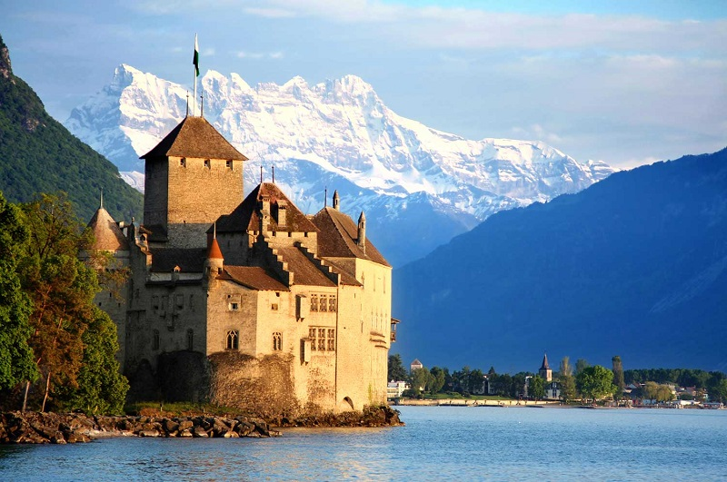

Швейцария-удивительная страна загадок
Швейцария-страна загадок. Со своими тайнамии чарующими особенностями, она не перестает поражать воображение всех тех, чей интерес к государству швейцарцев, их устоям и менталитету постоянно подпитывает желание узнать о Конфедерации все больше и больше
Кому-то Швейцария может показаться скучной, кому-то- чересчур дорогой, зато кто-то найдет там самые очаровательные замки в мире, а другой-лучшие трассы Альп. Икаждый будет по-своему прав. Кроме того, есть еще одно преимущество этой страны, которое кое-для кого стабильно перевешивает минусы: это возможность приобщаться к обществу всевозможных знаменитостей.
В этой стране не хочется экономить-хотя цены приводят в оторопь,но окружающие виды приводят в восторг!
Регионы
- Раманди
- Итальянская Швейцария
- Ратараманская Швейцария
- Восток Швейцарии
- Центр Швейцарии
Страна озер и Альп
За ее природные ландшафтв Конфедерацию называют "страной озер и Альп". И правда: около 60 процентов площади занимают величественные Альпы. А количество водоемов колеблется возле отметки в 1500.

Времена года
.jpeg)
Как для физических лиц, так и компаний будет приятной новость об относительно низком налоговом бремени в нашей стране. Одновременно крайне важно понимать, что выгодные налоги можно найти далеко не во всех кантонах. Например, неблагоприятными с точки зрения ведения бизнеса являются кантоны Невшатель, Юра и Фрибург.